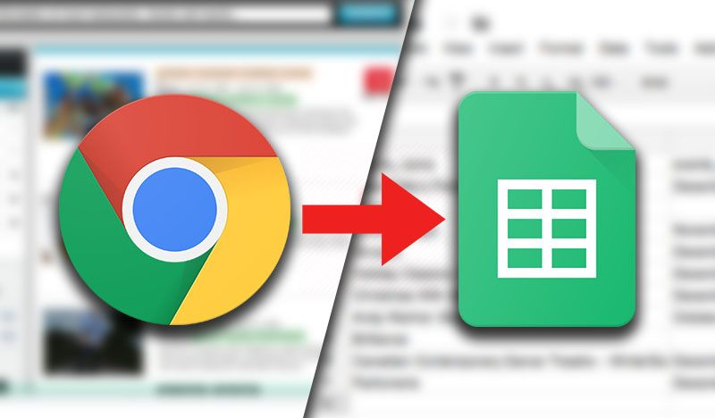
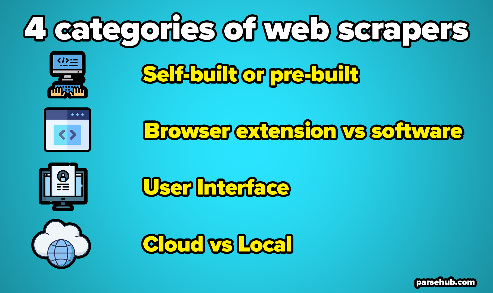

Web scraping is one of the most efficient and useful ways to
extract data from a website, especially in 2023!
Some websites can contain a very large amount of invaluable data.
Stock prices, product details, sports stats, company contacts, you
name it.
If you wanted to access this information, you’d either have to use
whatever format the website uses or copy-paste the information
manually into a new document. Here’s where web scraping can help.
What is Web Scraping?
Web scraping refers to the
extraction of data from a website. This
information is collected and then exported into a format that is
more useful for the user. Be it a spreadsheet or an API.
Although web scraping can be done manually, in most cases,
automated tools are preferred when scraping web data as they can
be less costly and work at a faster rate.
But in most cases, web scraping is not a simple task. Websites
come in many shapes and forms, as a result, web scrapers vary in
functionality and features.
Is web scraping legal?
In short, the action of web scraping isn't illegal. However, some
rules need to be followed. Web scraping becomes illegal when non
publicly available data becomes extracted.
This comes as no surprise given the growth of web scraping and
many recent legal cases related to web scraping.
If you want to learn more about the legality of web scraping, you
can continue reading here:
Is web scraping legal?
How do Web Scrapers Work?
So, how do web scrapers work? Automated web scrapers work in a
rather simple but also complex way. After all, websites are built
for humans to understand, not machines.
First, the web scraper will be given one or more URLs to load
before scraping. The scraper then loads the entire HTML code for
the page in question. More advanced scrapers will render the
entire website, including CSS and Javascript elements.
Then the scraper will either extract all the data on the page or
specific data selected by the user before the project is run.
Ideally, the user will go through the process of selecting the
specific data they want from the page. For example, you might want
to scrape an Amazon product page for prices and models but are not
necessarily interested in product reviews.
Lastly, the web scraper will output all the data that has been
collected into a format that is more useful to the user.
Most web scrapers will output data to a CSV or Excel spreadsheet,
while more advanced scrapers will support other formats such as
JSON which can be used for an API.
Excel"
/>
What Kind of Web Scrapers are There?
Web scrapers can drastically differ from each other on a
case-by-case basis.

For simplicity’s sake, we will break down some of these aspects
into 4 categories. Of course, there are more
intricacies at play when comparing web scrapers.
- self-built or pre-built
- browser extension vs software
- User interface
- Cloud vs Local
Self-built or Pre-built
Just like how anyone can build a website, anyone
can build their own web scraper.
However, the tools available to build your own web scraper still
require some advanced programming knowledge. The scope of this
knowledge also increases with the number of features you’d like
your scraper to have.
On the other hand, there are numerous pre-built web scrapers that
you can download and run right away. Some of these will also have
advanced options added such as scrape scheduling, JSON and Google
Sheets exports and more.
Browser extension vs Software
In general terms, web scrapers come in two forms: browser
extensions or computer software.
Browser extensions are app-like programs that can be added to your
browsers such as Google Chrome or Firefox. Some popular browser
extensions include themes, ad blockers, messaging extensions and
more.
Web scraping extensions have the benefit of being simpler to run
and being integrated right into your browser.
However, these extensions are usually limited by living in your
browser. Meaning that any advanced features that would have to
occur outside of the browser would be impossible to implement. For
example, IP Rotations would not be possible in this kind of
extension.
On the other hand, you will have actual web scraping software that
can be downloaded and installed on your computer. While these are
a bit less convenient than browser extensions, they make up for it
in advanced features that are not limited by what your browser can
and cannot do.
User Interface
The user interface between web scrapers can vary quite extremely.
For example, some web scraping tools will run with a minimal UI
and a command line. Some users might find this unintuitive or
confusing.
On the other hand, some web scrapers will have a full-fledged UI
where the website is fully rendered for the user to just click on
the data they want to scrape. These web scrapers are usually
easier to work with for most people with limited technical
knowledge.
Some scrapers will go as far as integrating help tips and
suggestions through their UI to make sure the user understands
each feature that the software offers.
Cloud vs Local
From where does your web scraper actually do its job?
Local web scrapers will run on your computer using its resources
and internet connection. This means that if your web scraper has a
high usage of CPU or RAM, your computer might become quite slow
while your scrape runs. With long scraping tasks, this could put
your computer out of commission for hours.
Additionally, if your scraper is set to run on a large number of
URLs (such as product pages), it can have an impact on your ISP’s
data caps.
Cloud-based web scrapers run on an off-site server which is
usually provided by the company that developed the scraper itself.
This means that your computer’s resources are freed up while your
scraper runs and gathers data. You can then work on other tasks
and be notified later once your scrape is ready to be exported.
This also allows for very easy integration of advanced features
such as IP rotation, which can prevent your scraper from getting
blocked from major websites due to their scraping activity.
What are Web Scrapers Used For?
By this point, you can probably think of several different ways in
which
web scrapers can be used.
We’ve put some of the most common ones below (plus a few unique
ones).
Real Estate Listing Scraping
Many real estate agents use web scraping to populate their
database of available properties for sale or for rent.
For example, a real estate agency will scrape MLS listings to
build an API that directly populates this information onto their
website. This way, they get to act as the agent for the property
when someone finds this listing on their site.
Most listings that you will find on a Real Estate website are
automatically generated by an API.
Industry Statistics and Insights
Many companies use web scraping to build massive databases and
draw industry-specific insights from these. These companies can
then sell access to these insights to companies in said
industries.
For example, a company might scrape and analyze tons of data about
oil prices, exports and imports in order to sell their insights to
oil companies across the world.
Comparison Shopping Sites
Some several websites and applications can help you to easily
compare pricing between several retailers for the same product.
One way that these websites work is by using web scrapers to
scrape product data and pricing from each retailer daily. This
way, they can provide their users with the comparison data they
need.
Lead Generation
One incredibly popular use of web scraping is lead generation.
This use is so popular in fact, that we have written an entire
guide on using web scraping for lead generation.
In short, web scraping is used by many companies to collect
contact information about potential customers or clients. This is
incredibly common in the business-to-business space, where
potential customers will post their business information publicly
online.
The list of things you can do with web scraping is almost endless.
After all, it is all about what you can do with the data you’ve
collected and how valuable you can make it.
The Best Web Scraper
The obvious answer is that it depends.
The more you know about your scraping needs, the better of an idea
you will have about what’s the best web scraper for you.